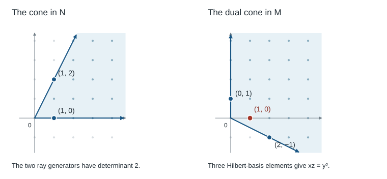

A rational cone records inequalities on the exponents of monomials. Keeping exactly the monomials that satisfy those inequalities produces a finitely generated normal domain, and its spectrum contains a torus as a dense open subset. This construction is the local foundation of toric geometry. The task of this chapter is to establish each part of that sentence, including what happens when the cone has smaller dimension than its ambient lattice.
The main references are [CLS11, Sections 1.2–1.3] and [Ful93, Chapter 1]. Our proofs keep the lattice visible throughout: changing the lattice can change the variety even when the real cone stays the same. The algebraic arguments work over any field \(k\text{;}\) no restriction on the characteristic is needed for the constructions or the examples below. We use the standard facts that a Laurent polynomial ring over a field is integrally closed, and that the dimension of a finitely generated domain over a field equals the transcendence degree of its fraction field.
Section1.1Lattices, monomials, and the direction of the construction
Let \(N\) be a lattice of rank \(n\text{,}\) and let \(M=\Hom_{\Z}(N,\Z)\) be its dual. We write \(N_{\R}=N\otimes_{\Z}\R\text{,}\)\(M_{\R}=M\otimes_{\Z}\R\text{,}\) and \(\langle m,v\rangle\) for their perfect pairing. A cone will live in \(N_{\R}\text{,}\) whereas the exponents of functions will live in \(M\text{.}\) This separation is essential: inequalities are tested on vectors in \(N\text{,}\) while multiplication adds vectors in \(M\text{.}\)
Definition1.1Characters and the group algebra.
The group algebra \(k[M]\) has a \(k\)-basis consisting of formal symbols \(\chi^m\text{,}\) one for each \(m\in M\text{,}\) with multiplication
An element \(m\in M\) gives a character \(\chi^m:T_N\to\Gm\text{.}\) An element \(v\in N\) gives a one-parameter subgroup \(\lambda_v:\Gm\to T_N\text{,}\) characterized by
After choosing a basis \(e_1,\ldots,e_n\) of \(N\) and its dual basis \(e_1^*,\ldots,e_n^*\text{,}\) the character \(\chi^{a_1e_1^*+\cdots+a_ne_n^*}\) becomes \(t_1^{a_1}\cdots t_n^{a_n}\text{.}\) Thus
The identifications depend on the basis; the group algebra and its characters do not.
For a cone \(\sigma\subseteq N_{\R}\text{,}\) the condition \(\langle m,v\rangle\geq0\) for all \(v\in\sigma\) selects the characters that will remain regular on the affine variety. The resulting direction is
The empty list generates \(\{0\}\text{.}\) A cone in \(N_{\R}\) is rational if its generators may be chosen in \(N\text{,}\) or equivalently in \(N\otimes_{\Z}\Q\text{.}\) Its dimension is the dimension of its real linear span. Its lineality space is \(\sigma\cap(-\sigma)\text{;}\) it is strongly convex, or pointed, if this space is \(\{0\}\text{.}\)
The dual cone and the annihilator are
\begin{equation*}
\sigma^\vee=\{m\in M_{\R}:\langle m,v\rangle\geq0
\text{ for all }v\in\sigma\},\qquad
\sigma^\perp=\{m\in M_{\R}:\langle m,v\rangle=0
\text{ for all }v\in\sigma\}.
\end{equation*}
The relative interior of a cone is its interior in its real linear span.
Polyhedral does not by itself mean strongly convex, and strongly convex does not mean full-dimensional. A ray in \(\R^2\) is strongly convex and one-dimensional. A line is polyhedral but not strongly convex. We temporarily allow cones with lines in the convex-geometric statements; the cones used to construct \(n\)-dimensional affine toric varieties with torus \(T_N\) will be strongly convex.
Lemma1.3Finite inequalities and finite generators.
A cone is rational polyhedral if and only if it is the intersection of finitely many homogeneous rational closed half-spaces. The dual of a rational polyhedral cone is rational polyhedral, and
First consider intersecting a finitely generated cone \(C=\Cone(w_1,\ldots,w_s)\) with one half-space \(\ell\geq0\text{.}\) It is generated by the \(w_i\) with \(\ell(w_i)\geq0\text{,}\) together with the vectors
These vectors belong to \(C\cap\ker\ell\text{.}\) To see that they suffice, write a vector in the intersection as a nonnegative combination of the \(w_i\text{.}\) The total positive \(\ell\)-weight is at least the absolute value of the total negative weight. Distribute the negative weight among the positive terms. Pairing an amount \(c\) of positive weight from \(w_i\) with the same amount of negative weight from \(w_j\) produces
The unused terms have nonnegative \(\ell\)-weight. Such a distribution exists, for example by assigning amounts proportional to the positive weights. This proves the generating assertion.
The whole vector space is generated as a cone by the positive and negative vectors of a basis. Repeatedly applying the preceding construction proves that an intersection of finitely many homogeneous rational half-spaces is a rational polyhedral cone. If \(\sigma=\Cone(v_1,\ldots,v_r)\text{,}\) then
We also need the bipolar assertion. A finitely generated cone is closed: every vector in it admits a representation using a linearly independent subcollection of its generators. Indeed, a linear dependence among an active collection allows one to vary the coefficients along a relation until one nonnegative coefficient becomes zero, without making any coefficient negative. Repetition reduces the active collection. The cone is consequently a finite union of cones generated by linearly independent vectors, each of which is closed in its span and hence in the ambient space.
The finite-dimensional separation theorem now shows that a vector outside \(\sigma\) is separated from it by a linear functional nonnegative on \(\sigma\) and negative on that vector. One can obtain this functional by choosing an inner product and taking a nearest point of the closed convex cone. It follows that every vector of \((\sigma^\vee)^\vee\) lies in \(\sigma\text{;}\) the other inclusion follows directly from the definition. Finally, apply the already proved finite generation of \(\sigma^\vee\) and take the dual again to express \(\sigma\) by finitely many rational inequalities.
The proof gives two different roles to rationality. Real polyhedral duality is a convex statement. Rationality ensures that the inequalities and generators can be chosen in the lattices after denominators are cleared. The second role is what makes the semigroup algebra finitely generated.
Proposition1.4Strong convexity and positive functionals.
For a rational polyhedral cone \(\sigma\subseteq N_{\R}\text{,}\) the following are equivalent:
\(\sigma\) is strongly convex.
\(\sigma^\vee\) spans \(M_{\R}\text{.}\)
There exists \(m_0\in M\) such that \(\langle m_0,v\rangle\gt0\) for every nonzero \(v\in\sigma\text{.}\)
The functional in the third assertion can be chosen in the ordinary interior of \(\sigma^\vee\text{.}\) Also,
By bipolarity, the annihilator in \(N_{\R}\) of the linear span of \(\sigma^\vee\) is exactly \(\sigma\cap(-\sigma)\text{.}\) Thus the first two assertions are equivalent. A full-dimensional rational cone has a rational point in its ordinary interior; multiply it by a positive integer to obtain \(m_0\in M\text{.}\) An interior point of \(\sigma^\vee\) cannot vanish on a nonzero \(v\in\sigma\text{,}\) since a sufficiently small perturbation in a direction negative on \(v\) would then leave the dual cone. This proves the third assertion. Conversely, a functional strictly positive on nonzero vectors cannot be nonnegative on both a nonzero \(v\) and its negative in \(\sigma\text{.}\) The last equality follows by requiring both \(\langle m,v\rangle\geq0\) and its negative to be nonnegative.
For the zero cone the positivity condition is vacuous, and its dual is all of \(M_{\R}\text{.}\) No separate exception to the equivalence is needed.
Section1.3Faces and integral exposing functionals
Definition1.5Faces and rays.
A face of a polyhedral cone \(\sigma\) is a cone
\begin{equation*}
\tau=\sigma\cap m^\perp
\quad\text{for some }m\in\sigma^\vee.
\end{equation*}
We write \(\tau\preceq\sigma\text{.}\) The cone \(\sigma\) itself is a face, exposed by \(m=0\text{.}\) A ray is a one-dimensional strongly convex cone; a ray of \(\sigma\) means a face that is a ray. A rational ray has a unique primitive generator \(u_\rho\in N\text{,}\) characterized by
A strongly convex cone is simplicial if its primitive ray generators are linearly independent over \(\R\text{.}\)
This is the exposed-face definition. For polyhedral cones it agrees with the usual convex definition of a face. For a strongly convex cone, \(\{0\}\) is a face by Proposition 1.4. If the cone has lines, every face contains its lineality space, so \(\{0\}\) need not be a face.
Lemma1.6Faces can be exposed by characters.
Let \(\sigma=\Cone(v_1,\ldots,v_r)\) be rational polyhedral with \(v_i\in N\text{,}\) and let \(\tau\preceq\sigma\text{.}\) Then \(\tau\) is generated by the \(v_i\) that lie in \(\tau\text{,}\) and there exists \(m_\tau\in\sigma^\vee\cap M\) satisfying
There are finitely many faces. Intersections of faces are faces, and a face of a face is a face of \(\sigma\text{.}\)
Proof.
If a nonnegative sum \(\sum a_iv_i\) has pairing zero with an exposing functional, every active term has pairing zero. This proves the generating assertion and finiteness. To choose an integral exposing functional, start with a real one. Impose the rational linear equations that it vanish on the generators of \(\tau\text{.}\) In the rational linear subspace defined by these equations, rational points are dense. Approximate the original functional while preserving the finitely many strict positive inequalities on the remaining generators, and then clear denominators.
If two faces are exposed by \(m\) and \(m'\text{,}\) their intersection is exposed by \(m+m'\text{,}\) since both pairings are nonnegative on \(\sigma\text{.}\) Finally let \(\gamma\preceq\tau\preceq\sigma\text{.}\) Choose a linear functional \(u\) nonnegative on \(\tau\) that exposes \(\gamma\) there, and let \(m\) expose \(\tau\) in \(\sigma\text{.}\) For a sufficiently large positive real number \(c\text{,}\) the functional \(u+cm\) is strictly positive on every chosen generator outside \(\tau\text{.}\) On \(\tau\) its zeros are exactly \(\gamma\text{.}\) Thus it exposes \(\gamma\) in \(\sigma\text{.}\)
reverses inclusion and gives a bijection between faces of \(\sigma\) and faces of \(\sigma^\vee\text{.}\) Its inverse is \(\gamma\mapsto\sigma\cap\gamma^\perp\text{.}\) For every face,
Choose generators of \(\tau\) and let \(v\) be their sum. The nonnegative pairings show that \(\tau^*=\sigma^\vee\cap v^\perp\text{,}\) so \(\tau^*\) is a face. If \(m_\tau\) exposes \(\tau\text{,}\) it belongs to \(\tau^*\text{,}\) and hence
Applying the same argument to \(\sigma^\vee\) and using bipolarity proves that the two assignments are inverse. Inclusion reversal is immediate.
Inside the vector space \(\tau^\perp\text{,}\) a sufficiently small neighborhood of \(m_\tau\) still has positive pairing with the finitely many generators of \(\sigma\) outside \(\tau\text{.}\) It therefore lies in \(\tau^*\text{.}\) Thus \(\tau^*\) spans \(\tau^\perp\text{,}\) whose dimension is \(n-\dim\tau\text{.}\)
The dimension formula uses the rank of the ambient lattice, even when \(\sigma\) is not full-dimensional. For example, a ray in \(N_{\R}\cong\R^2\) has a one-dimensional dual face, while its zero face corresponds to the whole two-dimensional dual cone. This is one reason to retain the ambient lattice in the notation.
Proposition1.8The primitive rays generate the cone.
A strongly convex rational polyhedral cone is generated by its finitely many primitive ray generators. Its zero cone has the empty generating list.
Proof.
For a nonzero cone, discard zero vectors from an integral generating list \(v_1,\ldots,v_s\) and choose \(m_0\in M\) strictly positive on them. Its section by \(\langle m_0,v\rangle=1\) is exactly
Indeed normalizing a nonnegative conical combination gives a convex combination of these normalized vectors, and the converse is immediate. A finite convex hull is the convex hull of its vertices: remove a listed point whenever it is a convex combination of the others, until no such point remains.
Each remaining vertex is strictly separated from the convex hull of the other remaining points. Subtracting its value times \(m_0\) from the separating linear functional makes the functional zero at that vertex and positive at every other vertex. It is consequently nonnegative on the whole cone, and its zero face is precisely the ray through the chosen vertex. When the section has only one vertex, the original cone is itself that ray. Thus the cone is generated by these rays. Conversely, an exposed one-dimensional face can contain only one of the section vertices and must contain one, by the face property for a generating sum. These are all its rays. Their rational directions have primitive lattice generators; replacing a nonzero rational generator by its primitive one leaves the cone unchanged.
Section1.4Semigroups and Gordan’s lemma
Definition1.9Additive semigroups in a lattice.
A semigroup \(S\) in a lattice \(M\) means a subset containing \(0\) and closed under addition. Its group of differences is
\begin{equation*}
\operatorname{gp}(S)=S-S\subseteq M.
\end{equation*}
It is finitely generated if \(S=\N u_1+\cdots+\N u_r\) for finitely many elements \(u_i\text{.}\) Its semigroup algebra is the subalgebra
A finitely generated semigroup in a lattice is also called an affine semigroup.
The word semigroup sometimes does not require an identity. Here \(0\in S\) is always part of the definition, so the same object may be called a commutative monoid. Addition is the operation in \(S\text{;}\) multiplication is the corresponding operation on the monomials of \(k[S]\text{.}\) Since the monomials are a basis, distinct exponents remain linearly independent over every field.
Proposition1.10Algebra detected by exponents.
Let \(S\subseteq M\) be a semigroup and \(L=\operatorname{gp}(S)\text{.}\)
\(k[S]\) is an integral domain, and its fraction field is the fraction field of \(k[L]\text{.}\)
\(k[S]\) is a finitely generated \(k\)-algebra if and only if \(S\) is finitely generated.
If these finite generation conditions hold, \(\dim k[S]=\rk L\text{.}\)
Proof.
The embedding in the Laurent polynomial ring \(k[L]\) proves that \(k[S]\) is a domain. Every \(u\in L\) is \(a-b\) with \(a,b\in S\text{,}\) so \(\chi^u=\chi^a/\chi^b\) belongs to its fraction field. This proves the first assertion.
Semigroup generators give algebra generators. Conversely, suppose that finitely many polynomials generate \(k[S]\) as an algebra. Let \(F\subseteq S\) be the finite union of their supports. All polynomials in these generators have support in \(\N F\text{.}\) Since each \(\chi^u\text{,}\)\(u\in S\text{,}\) must be such a polynomial, linear independence of Laurent monomials implies \(u\in\N F\text{.}\) Thus \(S=\N F\text{.}\) The final assertion follows from the first, because the fraction field of \(k[L]\) is a rational function field of transcendence degree \(\rk L\text{.}\)
Theorem1.11Gordan’s lemma.
If \(C\) is a rational polyhedral cone in \(M_{\R}\text{,}\) then \(C\cap M\) is a finitely generated semigroup. The cone may have lineality and may have smaller dimension than \(M_{\R}\text{.}\)
Proof.
Choose integral generators \(w_1,\ldots,w_r\) of \(C\text{.}\) The bounded set
has only finitely many lattice points. Given \(u\in C\cap M\text{,}\) choose an expression \(u=\sum a_iw_i\) with \(a_i\geq0\) and put \(b_i=\lfloor a_i\rfloor\text{.}\) Then
\begin{equation*}
u=\sum_{i=1}^r b_iw_i+w,\qquad
w=\sum_{i=1}^r(a_i-b_i)w_i\in P\cap M.
\end{equation*}
The remainder belongs to the lattice because \(u\) and all \(b_iw_i\) do. It belongs to \(C\) because the remaining coefficients are nonnegative. Consequently the finite set consisting of the \(w_i\) and the lattice points of \(P\) generates \(C\cap M\text{.}\) If \(C=\{0\}\text{,}\) the semigroup is simply \(\{0\}\text{.}\)
This proof does not require a simplicial cone or a unique expression for \(u\text{.}\) It gives a finite generating set, which is often much larger than a minimal one. In particular, generators of the real cone need not generate its lattice-point semigroup. Lattice points between the rays can supply indispensable algebra generators.
Definition1.12Hilbert basis in the pointed case.
For a strongly convex rational polyhedral cone \(C\subseteq M_{\R}\text{,}\) the Hilbert basis of \(C\cap M\) is the set of its nonzero elements that cannot be written as a sum of two nonzero elements of \(C\cap M\text{.}\)
The Hilbert basis is finite, generates the semigroup, and is contained in every semigroup generating set. For finiteness, an indecomposable element must occur in any finite generating set supplied by Gordan’s lemma. For generation, choose an integral linear functional strictly positive on \(C\setminus\{0\}\) and induct on its positive integer value. Every decomposition into two nonzero elements lowers that value. Thus in the pointed case the Hilbert basis is the unique minimal generating set. When the semigroup has nonzero units, this argument and this definition of a minimal generating set require modification; we will not use the pointed terminology in that situation.
Proposition1.13The full character lattice is recovered.
If \(\sigma\subseteq N_{\R}\) is strongly convex and rational polyhedral, then
hold on every nonzero generator \(v_i\) of \(\sigma\) once the integer \(q\geq0\) is sufficiently large. Thus both \(u+qm_0\) and \(qm_0\) lie in \(S_\sigma\text{,}\) and their difference is \(u\text{.}\) For \(\sigma=\{0\}\text{,}\) one already has \(S_\sigma=M\text{.}\)
Strong convexity is doing exactly the work of ensuring enough characters. For example, if \(\sigma=\R e_1\subseteq\R^2\) is a line, then \(S_\sigma=\Z e_2^*\text{.}\) The resulting algebra is a one-variable Laurent polynomial ring and cannot contain a dense two-dimensional torus.
Section1.5Saturation and normality
Finite generation gives an affine variety. Normality is controlled by whether a missing exponent can acquire a positive multiple inside the semigroup. The relevant lattice is its group of differences.
Definition1.14Saturation in the intrinsic lattice.
Let \(S\) be an affine semigroup and \(L=\operatorname{gp}(S)\text{.}\) Its saturation is
\begin{equation*}
\overline S=\{u\in L:ru\in S
\text{ for some integer }r\geq1\}.
\end{equation*}
The semigroup is saturated if \(S=\overline S\text{.}\)
Specifying \(L\) prevents a misleading normality test. The semigroup \(2\N\subseteq\Z\) is saturated in its group of differences \(2\Z\text{,}\) and \(k[2\N]=k[t^2]\) is a polynomial ring. The exponent \(1\) does not belong to the fraction-field lattice of that algebra; adjoining \(t\) changes its fraction field.
Lemma1.15Saturation fills the lattice points of the cone.
For \(S=\N u_1+\cdots+\N u_r\text{,}\) with \(L=\operatorname{gp}(S)\) and \(C=\Cone(u_1,\ldots,u_r)\subseteq L_{\R}\text{,}\) one has
\begin{equation*}
\overline S=C\cap L.
\end{equation*}
Proof.
If \(ru\in S\text{,}\) then \(u\in C\text{.}\) Conversely, a lattice point \(u\in C\) has a nonnegative real expression in the \(u_i\text{.}\) As in the closedness argument in Lemma 1.3, remove linear dependences until the active generators are linearly independent. The coefficients in the resulting expression are rational: they solve a linear system with rational coefficients and a unique solution on its column span. Clearing their denominators gives \(ru\in S\) for some positive integer \(r\text{.}\)
Lemma1.16Lattice-point algebras are integrally closed.
Let \(C\subseteq L_{\R}\) be a rational polyhedral cone spanning the real vector space of a lattice \(L\text{.}\) Then \(k[C\cap L]\) is integrally closed in the fraction field of \(k[L]\text{.}\)
Proof.
Write \(C\) using finitely many integral linear inequalities \(\ell_j\geq0\text{.}\) For a nonzero Laurent polynomial define
Lowest-weight terms in a product multiply without annihilating each other, since their product is nonzero in the Laurent polynomial domain. Therefore \(\nu_j(fg)=\nu_j(f)+\nu_j(g)\text{.}\) Extending by \(\nu_j(f/g)=\nu_j(f)-\nu_j(g)\) gives a valuation on the fraction field.
Suppose that \(f\) in that field is integral over \(k[C\cap L]\text{.}\) Its monic equation also has coefficients in the integrally closed Laurent polynomial ring \(k[L]\text{,}\) so \(f\in k[L]\text{.}\) For each \(j\text{,}\) the coefficients of the equation have nonnegative \(\nu_j\)-value. If \(\nu_j(f)\lt0\text{,}\) the leading term \(f^d\) has strictly smaller value than every other term of the equation, which is impossible for a sum equal to zero. Thus all \(\nu_j(f)\) are nonnegative. Every exponent in the Laurent support of \(f\) consequently satisfies every inequality for \(C\text{.}\) Hence \(f\in k[C\cap L]\text{.}\)
Theorem1.17Normalization of an affine semigroup algebra.
Let \(S\) be an affine semigroup and \(L=\operatorname{gp}(S)\text{.}\) The integral closure of \(k[S]\) in its fraction field is
It is finite as a \(k[S]\)-module. In particular, \(k[S]\) is normal if and only if \(S\) is saturated in \(L\text{.}\)
Proof.
The cone \(C=\Cone(S)\) spans \(L_{\R}\text{.}\) The preceding two lemmas show that \(k[\overline S]\) is normal and has the same fraction field as \(k[S]\text{.}\) Every monomial \(\chi^u\) with \(u\in\overline S\) is integral over \(k[S]\text{,}\) since it satisfies
\begin{equation*}
X^r-\chi^{ru}=0
\end{equation*}
for some \(ru\in S\text{.}\) By Gordan’s lemma, \(\overline S\) has finitely many semigroup generators. Thus \(k[\overline S]\) is generated over \(k[S]\) by finitely many integral elements, and so is a finite integral algebra.
Any element integral over \(k[S]\) is also integral over this larger normal ring, using the same monic equation, and hence belongs to it. This identifies the integral closure. If \(S\) is not saturated, a missing monomial \(\chi^u\) is integral and belongs to the common fraction field, but is absent from \(k[S]\) by linear independence of monomials. This proves the criterion.
The normality criterion is [CLS11, Theorem 1.3.5]; the normalization by the saturated semigroup is [CLS11, Proposition 1.3.8]. The valuation argument above supplies the integrally closed step directly and makes its independence of the characteristic explicit.
Corollary1.18Normality of the cone algebra.
For a strongly convex rational polyhedral cone \(\sigma\subseteq N_{\R}\text{,}\) the algebra \(k[S_\sigma]\) is a finitely generated normal domain of dimension \(n\text{.}\)
Proof.
Gordan’s lemma gives finite generation. The group of differences is \(M\) by Proposition 1.13. If \(ru\in\sigma^\vee\) for \(r\geq1\text{,}\) then \(u\in\sigma^\vee\text{,}\) so \(S_\sigma\) is saturated in \(M\text{.}\) Apply Theorem 1.17 and Proposition 1.10.
Normality does not assert smoothness. It says that rational functions integral over the coordinate ring are already regular there. A cone can produce a normal variety with a singular vertex; a two-dimensional example will make this distinction explicit in Section 1.9.2
Section1.6The affine variety and its dense torus
Definition1.19The affine chart of a cone.
For a strongly convex rational polyhedral cone \(\sigma\subseteq N_{\R}\text{,}\) set
\begin{equation*}
U_\sigma=\Spec k[S_\sigma],
\qquad S_\sigma=\sigma^\vee\cap M.
\end{equation*}
The inclusion \(k[S_\sigma]\hookrightarrow k[M]\) defines a morphism \(T_N\to U_\sigma\text{.}\)
We have proved that \(U_\sigma\) is an integral normal affine scheme of finite type and dimension \(n\text{.}\) It remains to prove that the displayed morphism is an open immersion and that multiplication on the torus extends to an action. Both statements have explicit algebraic descriptions.
Lemma1.20Inverting the generators recovers the group algebra.
Let \(S=\N u_1+\cdots+\N u_r\) be any affine semigroup, let \(L=\operatorname{gp}(S)\text{,}\) and set \(h=u_1+\cdots+u_r\text{.}\) Then
and \(h-u_i\in S\text{.}\) Thus the localization contains all characters with exponents in \(L\text{,}\) and is contained in \(k[L]\text{.}\) Its spectrum is \(D(\chi^h)\text{.}\) This open set is dense because \(k[S]\) is a domain and \(\chi^h\ne0\text{.}\) For the zero semigroup one may take the empty generating list and \(h=0\text{;}\) the assertion then reads \(k=k_1\text{.}\)
Apply this lemma to \(S_\sigma\) and use \(\operatorname{gp}(S_\sigma)=M\text{.}\) The morphism \(T_N\to U_\sigma\) is a dense open immersion. The particular equation \(D(\chi^h)\) depends on a generating list; the open immersion induced by the inclusion of algebras does not.
Proposition1.21The action is encoded by a coaction.
There is an action \(T_N\times U_\sigma\to U_\sigma\) whose comorphism is
Its restriction to \(T_N\times T_N\) is multiplication on the torus.
Proof.
The formula is multiplicative because exponents add, and it sends \(1\) to \(1\otimes1\text{.}\) On a basis character, the two comorphisms expressing associativity both give
The comorphism of the torus identity sends every \(\chi^u\) in the first factor to \(1\text{,}\) so the identity axiom follows as well. After the localization of Lemma 1.20, this is precisely the usual comultiplication of \(k[M]\text{.}\)
For a commutative \(k\)-algebra \(A\text{,}\) an \(A\)-point of \(U_\sigma\) is equivalently a multiplicative map
Here \(A\) is viewed as a multiplicative monoid, so some values may be zero or nonunits. A torus point is a group homomorphism \(t:M\to A^\times\text{.}\) The action reads
This description distinguishes a boundary point from a torus point without choosing coordinates.
Theorem1.22The affine cone construction.
A strongly convex rational polyhedral cone \(\sigma\subseteq N_{\R}\) determines a normal affine toric variety \(U_\sigma\) of dimension \(\rk N\text{,}\) with specified dense torus \(T_N\) and specified extension of its multiplication action.
The source statements are [CLS11, Proposition 1.2.17 and Theorem 1.2.18]. The theorem here includes the action explicitly and works over the fixed field \(k\text{.}\) In these notes, normality is part of the convention for a toric variety. A nonnormal affine variety may also have a dense torus and an extending action; Example 1.36 will show why these conditions alone do not force normality.
Proposition1.23Recovering the cone from a normal affine embedding.
Let \(X\) be a normal integral affine variety containing the specified split torus \(T_N\) as a dense open subset, and suppose that its multiplication action extends to \(X\text{.}\) Then there is a unique strongly convex rational polyhedral cone \(\sigma\subseteq N_{\R}\) for which the restriction map identifies
Consequently \(X\cong U_\sigma\) compatibly with the specified torus and its action.
Proof.
Restricting functions to the dense open torus embeds \(R=k[X]\) in \(k[M]\text{.}\) The action makes \(R\) stable under the torus coaction. If \(f=\sum a_u\chi^u\) belongs to \(R\text{,}\) its coaction in \(k[M]\otimes k[M]\) is
Since it lies in \(k[M]\otimes R\text{,}\) taking the coefficient of the basis element \(\chi^u\) in the first factor shows that \(a_u\chi^u\in R\text{.}\) Thus \(R=k[S]\) for the semigroup of exponents whose characters belong to \(R\text{.}\) Finite generation of \(R\) implies finite generation of \(S\) by Proposition 1.10.
The dense open immersion identifies the function fields. For any \(m\in M\text{,}\) express \(\chi^m=f/g\) with nonzero \(f,g\in k[S]\text{.}\) Comparing a nonzero monomial of \(g\) with the corresponding monomial in \(f=\chi^m g\) writes \(m\) as a difference of two elements of \(S\text{.}\) Hence \(\operatorname{gp}(S)=M\text{.}\) Normality and Theorem 1.17 now give
The cone \(C\) spans \(M_{\R}\text{,}\) so \(\sigma=C^\vee\) is strongly convex. Rational polyhedral duality gives \(\sigma^\vee=C\text{.}\) Finally the subalgebra determines \(S\text{,}\) then \(C\text{,}\) and then \(\sigma\text{,}\) proving uniqueness. The character formulas show that the identification respects the action.
The specified torus matters in this uniqueness statement. It fixes the character lattice and how its monomials are identified with rational functions on \(X\text{.}\) An abstract isomorphism of affine varieties need not preserve that additional data.
Section1.7Units, zero cones, and torus factors
Proposition1.24Invertible regular functions.
The units of the coordinate ring of \(U_\sigma\) are
Thus all units are constant if and only if \(\sigma\) is full-dimensional.
Proof.
A unit in \(k[S_\sigma]\) is a unit in \(k[M]\text{.}\) Units of a Laurent polynomial ring over a field are scalar monomials: this follows successively from the highest and lowest degrees in each Laurent variable. The monomial \(\chi^u\) and its inverse both belong to \(k[S_\sigma]\) exactly when \(u,-u\in\sigma^\vee\text{,}\) or equivalently \(u\in\sigma^\perp\text{.}\) If \(\sigma\) has smaller dimension, its rational annihilator has a nonzero lattice point; if it has full dimension, its annihilator is zero.
Example1.25Affine space with invertible coordinates.
Let \(e_1,\ldots,e_n\) be a basis of \(N\text{,}\) and let \(\sigma=\Cone(e_1,\ldots,e_r)\) for \(0\leq r\leq n\text{.}\) In the dual basis,
At \(r=n\) this is affine space; at \(r=0\) it is the torus itself. The zero cone is therefore an essential chart, not an empty geometric object.
For the ray \(\sigma=\R_{\geq0}e_1\) in a rank-two lattice, the chart is \(\A^1\times\Gm\text{.}\) The exponent \(e_2^*\) is unrestricted in sign, so its character remains invertible everywhere. The dimension of the chart is two even though the cone has dimension one.
Proposition1.26Separating the directions perpendicular to the cone.
The group \(N_\sigma\) is a saturated rank-\(d\) sublattice of \(N\text{.}\) A choice of complement \(N=N_\sigma\oplus N'\) yields a product decomposition
Here \(U_{\sigma,N_\sigma}\) uses the same cone in the smaller lattice \(N_\sigma\text{,}\) where it is full-dimensional. The product decomposition depends on the complement.
Proof.
If a positive multiple of a lattice vector lies in \(N_\sigma\text{,}\) then that vector lies in the same real span, so it also lies in \(N_\sigma\text{.}\) Thus \(N/N_\sigma\) is torsion-free and hence free, and a complement exists. The dual decomposition is
The cone inequalities involve only the first factor. Consequently its lattice-point semigroup is the direct sum of the dual-cone semigroup in the first factor and the entire lattice in the second. Taking semigroup algebras turns this direct sum into a tensor product, giving the stated product of spectra.
This reduction is often useful for proofs, but it should not silently change the lattice. The original variety still has dense torus \(T_N\) and dimension \(n\text{.}\) The smaller full-dimensional cone describes one factor after a choice of splitting.
Section1.8A face gives a distinguished open subset
Faces describe how the affine charts will fit together. Passing to a face weakens the inequalities on characters, so more monomials become regular. Algebraically, the extra monomials are obtained by inverting one character.
Theorem1.27Face localization.
Let \(\tau\preceq\sigma\) and choose \(m\in S_\sigma\) with \(\tau=\sigma\cap m^\perp\text{.}\) Then
This open immersion restricts to the identity on the common dense torus and is equivariant for \(T_N\text{.}\)
Proof.
Every element of \(S_\sigma+\N(-m)\) pairs nonnegatively with \(\tau\text{,}\) since \(m\) vanishes there. For the reverse inclusion, choose integral generators \(v_1,\ldots,v_r\) of \(\sigma\) and let \(u\in S_\tau\text{.}\) On the generators lying in \(\tau\) one has \(\langle u,v_i\rangle\geq0\) and \(\langle m,v_i\rangle=0\text{.}\) On every remaining generator, \(\langle m,v_i\rangle\gt0\text{.}\) A sufficiently large integer \(q\geq0\) therefore satisfies
\begin{equation*}
\langle u+qm,v_i\rangle\geq0
\quad\text{for every }i.
\end{equation*}
Hence \(u+qm\in S_\sigma\) and \(u=(u+qm)-qm\text{,}\) proving the semigroup equality.
Localizing a semigroup algebra at \(\chi^m\) permits precisely the exponents \(u-qm\) with \(u\in S_\sigma\text{,}\)\(q\in\N\text{.}\) This proves the ring equality and the principal-open description. The action coactions agree on every character, and both ring maps to \(k[M]\) are the original inclusions. Thus the open immersion has the stated compatibility with the torus and its action.
The algebraic formula can also be written \(S_\tau=S_\sigma+\Z(-m)\text{,}\) because \(m\in S_\sigma\text{.}\) The version with \(\N(-m)\) displays what localization does: it adjoins nonnegative powers of the single inverse character. The source is [CLS11, Proposition 1.3.16].
Corollary1.28Intersections of face charts.
For faces \(\tau,\gamma\preceq\sigma\text{,}\) their open subsets in \(U_\sigma\) satisfy
If \(\gamma\preceq\tau\preceq\sigma\text{,}\) the composite open immersion \(U_\gamma\to U_\tau\to U_\sigma\) is the open immersion given directly by the face \(\gamma\preceq\sigma\text{.}\)
Proof.
If \(m,m'\) expose \(\tau,\gamma\text{,}\) their sum exposes \(\tau\cap\gamma\text{.}\) The intersection of the two principal opens is
This proves the first assertion. In the second, all three coordinate maps are inclusions of the respective character subalgebras in \(k[M]\text{,}\) so their composites agree.
Taking \(\tau=\{0\}\) gives another proof that the torus is principal open. Choose any integral functional strictly positive on \(\sigma\setminus\{0\}\text{;}\) then
For the standard orthant \(\sigma=\Cone(e_1,\ldots,e_n)\) and the face generated by \(e_1,\ldots,e_r\text{,}\) one may take \(m=e_{r+1}^*+\cdots+e_n^*\text{.}\) Its chart is obtained from \(\A^n\) by inverting \(x_{r+1}\cdots x_n\text{,}\) hence by making each of those coordinates invertible.
These compatibilities are exactly what is needed when affine charts are glued along common faces. The construction of a fan will add a condition ensuring that intersections of cones really are common faces; the local algebra needed for that gluing has already been established here.
Section1.9A normal singular surface
Example1.29The cone generated by \((1,0)\) and \((1,2)\).
The dual cone has primitive ray generators \((0,1)\) and \((2,-1)\text{,}\) but these do not generate all its lattice points as a semigroup. The additional vector \((1,0)\) is indispensable.
Each of the three displayed generators is indecomposable: the two extremal ones are primitive on extremal rays, and \((1,0)\) cannot be a sum of the other two. Thus they form the Hilbert basis.
To check that no relations are missing, reduce a monomial containing both \(x\) and \(z\) by replacing a factor \(xz\) with \(y^2\text{.}\) The quotient is spanned by
Their exponent vectors are respectively \((j,i)\) and \((j+2c,-c)\text{.}\) They are pairwise distinct, so their images in the semigroup algebra are linearly independent. This proves injectivity.
The ring is normal by the cone construction. Nevertheless the point with maximal ideal \(\mathfrak m=(x,y,z)\) is singular. Its local dimension is two: the whole ring has dimension two, and the chain of prime ideals
has length two. Its cotangent space \(\mathfrak m/\mathfrak m^2\) has dimension three over \(k\text{,}\) since the defining equation has no linear term. Hence the local ring is not regular.
Every other point is smooth. Indeed the complement of the vertex is covered by \(D(x)\) and \(D(z)\text{,}\) because a prime containing \(x,z\) must contain \(y\text{.}\) On these opens the coordinate rings are
These are smooth over \(k\text{.}\) Thus the underlying nonsmooth locus consists of the vertex in every characteristic, including characteristic two.

The cone generated by (1,0) and (1,2) in the cocharacter lattice, beside its dual cone with Hilbert basis (0,1), (1,0), and (2,-1).
Figure1.30.The singular cone and its dual. Primitive generators of the original rays do not form a lattice basis; the dual semigroup needs the additional generator \((1,0)\) between its extremal rays.
The tangent-space computation is characteristic independent. In characteristic two, the partial derivative with respect to \(y\) vanishes, so the Jacobian subscheme can have a different scheme structure even though its support is still the vertex. One should distinguish this scheme structure from the assertion about which points are smooth.3
The original cone is simplicial: its two rays are linearly independent. Their primitive generators, however, span an index-two sublattice of \(N=\Z^2\text{.}\) If the same real cone is instead placed in the lattice generated by those two vectors, they form a basis, and the corresponding affine variety is \(\A^2\text{.}\) The dual character lattice changes as well. This example demonstrates both that simplicial need not mean smooth and that the real picture alone does not determine the variety.
Section1.10The lattice-basis criterion for smoothness
The preceding example suggests the right condition. Primitivity is a condition on each ray separately; smoothness requires a simultaneous lattice-basis condition.
Definition1.31Regular cones.
A strongly convex rational polyhedral cone is regular, or smooth, if it is generated by a subset of a basis of \(N\text{.}\) The zero cone is regular, generated by the empty subset.
Theorem1.32Smoothness is a basis condition.
The affine toric variety \(U_\sigma\) is smooth over \(k\) if and only if \(\sigma\) is regular.
Proof.
If \(\sigma\) is generated by a subset of a basis, Example 1.25 identifies \(U_\sigma\) with \(\A^d\times\Gm^{n-d}\text{,}\) which is smooth.
For the converse, first suppose that \(\sigma\) has dimension \(n\text{.}\) Its dual cone is strongly convex, so \(S=S_\sigma\) has no units other than \(0\text{.}\) There is a \(k\)-point with maximal ideal
This is an ideal because a sum of two semigroup elements can be zero only when both are zero. The nonzero monomials that survive in \(\mathfrak m/\mathfrak m^2\) are exactly the indecomposable elements of \(S\text{.}\) Their residue classes are linearly independent, so the dimension of this cotangent space is the size of the Hilbert basis.
If \(U_\sigma\) is smooth, its tangent space at this point has dimension \(n\text{.}\) The Hilbert basis consequently consists of \(n\) elements \(u_1,\ldots,u_n\text{.}\) They generate \(S\) as a semigroup and \(M\) as a group. A generating set of \(n\) elements of a rank-\(n\) free abelian group is a basis: the surjection \(\Z^n\to M\) has a rank-zero kernel, which must be zero. Hence
Its real cone is the positive orthant in this basis, and duality shows that \(\sigma\) is generated by the dual basis of \(N\text{.}\)
For a cone of dimension \(d\lt n\text{,}\) use the product decomposition of Proposition 1.26. Let \(H\) be the Hilbert basis of the dual semigroup for the full-dimensional factor \(U_{\sigma,N_\sigma}\text{.}\) At the point consisting of its monomial point and the identity of the torus factor, the cotangent space is the direct sum of the two cotangent spaces, and has dimension
\begin{equation*}
|H|+(n-d).
\end{equation*}
Smoothness of the \(n\)-dimensional product forces this to equal \(n\text{,}\) so \(|H|=d\text{.}\) The preceding basis argument in \(N_\sigma\) makes \(\sigma\) regular there. As \(N_\sigma\) is a saturated direct summand, its basis extends to a basis of \(N\text{.}\) This proves regularity in the original lattice.
The Hilbert-basis description of the cotangent space and the smoothness criterion are [CLS11, Lemma 1.3.10 and Theorem 1.3.12]. The proof includes the reduction for cones of smaller dimension in their original lattice.
Regular implies simplicial, but the converse fails in Example 1.29. For a full-dimensional simplicial cone with primitive ray generators \(v_1,\ldots,v_n\text{,}\) the criterion is equivalent to
in any lattice basis. For a smaller-dimensional cone, one first works in the saturated lattice \(N\cap\operatorname{span}_{\R}(\sigma)\text{.}\) An index computed in a nonsaturated sublattice can conceal the obstruction to smoothness. The terminology regular, smooth, and simplicial is compared in [CLS11, Definition 1.2.16] and [Oda88, Chapter 1].
Section1.11Generators, binomial relations, and a finite calculation
The construction by a semigroup algebra is intrinsic. To give equations in affine space, one chooses semigroup generators and computes their additive relations. This is an effective passage from lattice data to a presentation of the coordinate ring. The underlying algebra is developed systematically in [Stu96, Chapters 4 and 13]; here we isolate the part needed for explicit affine examples.
Proposition1.33The kernel is generated by binomials.
Let \(S=\N u_1+\cdots+\N u_r\) in a lattice \(M\text{.}\) For \(a=(a_1,\ldots,a_r)\in\N^r\text{,}\) put \(x^a=x_1^{a_1}\cdots x_r^{a_r}\text{.}\) The kernel of the surjection
It is a prime ideal, called the toric ideal of this generating list, and it admits a finite binomial generating set.
Proof.
Every displayed binomial maps to zero. Conversely, group the monomials in a polynomial of the kernel by their common image exponent in \(S\text{.}\) In each group the coefficients sum to zero, because the target monomials are linearly independent. Choose one monomial in the group. Subtracting its appropriate multiples expresses the group as a \(k\)-linear combination of differences of monomials with the same exponent. Thus the displayed binomials generate the entire kernel. Primality follows because the quotient is a domain. The polynomial ring is noetherian, so a finite subcollection of these binomials generates their ideal.
An additive relation of exponents therefore gives an equation. A basis of the abelian group of relations, however, need not generate the polynomial ideal. In a Laurent polynomial ring variables can be cancelled; on affine coordinate hyperplanes those cancellations can lose equations.4
Proposition1.34From a relation lattice to the toric ideal.
Let \(A:\Z^r\to M\) send the \(i\)-th standard basis vector to \(u_i\text{,}\) and let \(\ell_1,\ldots,\ell_s\) be a \(\Z\)-basis of \(\ker A\text{.}\) Write \(\ell_j=\ell_j^+-\ell_j^-\) with disjoint nonnegative parts, and set
show that the basis relations generate all relations \(x^\ell-1\text{,}\)\(\ell\in\ker A\text{,}\) in the Laurent ring. The corresponding quotient is the group algebra of \(\Z^r/\ker A\cong\operatorname{gp}(S)\text{.}\) Thus \(J\) and \(I_S\) have the same extension to \(k[x_1^{\pm1},\ldots,x_r^{\pm1}]\text{.}\)
Contracting a localized ideal from this Laurent ring gives precisely saturation by \(p\text{.}\) The ideal \(I_S\) is already saturated by \(p\text{,}\) because it is prime and contains no variable: their images in \(k[S]\) are nonzero monomials. The asserted equality follows.
The saturation here is saturation of an ideal by a multiplicative set. It is different from saturation of a semigroup in its group of differences. The two operations answer different questions: the former recovers polynomial equations from Laurent equations, while the latter computes normalization.
Here is a direct verification. Replace a factor \(x_ix_j\) with \(x_{i+1}x_{j-1}\) whenever \(j-i\geq2\text{.}\) These are exactly the three displayed relations. For a monomial of fixed degree, each replacement decreases the sum of the squares of its variable indices, so the reduction terminates. A reduced monomial has its indices in at most two consecutive values.
If a monomial has total degree \(d\gt0\) and sum of indices \(j\text{,}\) write \(j=ad+q\) with \(0\leq q\lt d\text{.}\) Unless \(j=3d\text{,}\) its unique reduced form is
the endpoint \(j=3d\) gives \(x_3^d\text{.}\) Its image is \(s^{3d-j}t^j\text{.}\) Distinct pairs \((d,j)\) give distinct monomials, so the reduced forms are linearly independent in the image. This proves that the three relations give the entire kernel in every characteristic.
To see equality, the generators lie in this subgroup, and \(u_0\) together with \(u_1-u_0=(-1,1)\) generate it. Every nonnegative pair of total degree \(3d\) is a sum of \(d\) of the four generators, for example by choosing indices with sum equal to its second coordinate. Hence
\begin{equation*}
S=\R_{\geq0}^2\cap L.
\end{equation*}
It is saturated in \(L\text{,}\) so the algebra is normal. It would be incorrect to test its normality using saturation in the larger lattice \(\Z^2\text{.}\) To realize this presentation by the cone construction, the cocharacter lattice is \(\Hom(L,\Z)\text{.}\)
A practical calculation can now follow a finite sequence: dualize the cone inequalities, compute lattice generators using Gordan’s lemma or a Hilbert-basis algorithm, compute the integer relation lattice, and obtain the polynomial toric ideal by saturation or elimination. A final normal-form check, as in the two surface examples, can establish the presentation without assuming that a list of plausible binomials is complete.
Section1.12What the hypotheses exclude
Example1.36A dense torus without normality.
Let \(S=2\N+3\N\subseteq\Z\text{.}\) Its group of differences is \(\Z\text{,}\) but it is not saturated: \(1\notin S\) and \(2\cdot1\in S\text{.}\) The associated algebra is
To verify the kernel, reduce a polynomial modulo \(b^2-a^3\) to a sum of monomials \(a^i\) and \(a^ib\text{.}\) Their images are \(t^{2i}\) and \(t^{2i+3}\text{,}\) which have distinct exponents. This proves the presentation over every field.
The character coaction extends its multiplication action. The ring is nevertheless not normal, because \(t=t^3/t^2\) lies in the fraction field, satisfies \(X^2-t^2=0\) over the ring, and does not lie in the ring. Its normalization is \(k[t]\text{,}\) since \(\overline S=\N\text{.}\) The normalization map \(\A^1\to\Spec k[t^2,t^3]\) is given by \(t\mapsto(t^2,t^3)\text{.}\)
Replacing \(S\) by the lattice points of its cone would fill the missing exponent and change the ring. Thus the normal cone construction classifies normal affine torus embeddings, while arbitrary affine semigroups also describe nonnormal embeddings. Terminology differs between references, so the normality convention must be checked when a statement is imported.
The semigroup \(C\cap\Z^2\) is not finitely generated. If it were, its real cone would be generated by finitely many lattice vectors, and their finitely many slopes would have a largest value strictly less than \(\sqrt2\text{.}\) But the lattice points \((q,\lfloor\sqrt2\,q\rfloor)\) lie in \(C\text{,}\) and their slopes approach \(\sqrt2\text{.}\) This is a contradiction. The rationality hypothesis in Gordan’s lemma cannot simply be removed.
The examples separate three conditions. Rational polyhedrality supplies finite generation. Strong convexity ensures that the group of character differences is the whole specified lattice and hence that the intended torus occurs. Saturation supplies normality. Smoothness then imposes the additional lattice-basis condition of Theorem 1.32. These conditions concern different parts of the construction and should be checked separately.
Section1.13How this local dictionary will be used
The output of the chapter is a local dictionary with specified maps. A cone gives a normal affine chart, a lattice point of its dual gives a regular character, and a face gives an equivariant open immersion by localization. These are the ingredients for the construction of a toric variety from a fan. The units formula also predicts which directions contribute torus factors, and the basis criterion detects the smooth charts before any gluing is attempted.
For calculation, it is useful to keep four pieces of data together: the ambient lattice, the cone inequalities, a semigroup generating list, and the relations among the corresponding monomials. A drawing of the cone records only the real geometry; the Hilbert basis and the index of ray generators retain arithmetic information absent from that drawing. The quadratic surface and the cubic presentation illustrate two different failures of a shortcut: ray generators may miss algebra generators, and a basis of exponent relations may miss polynomial equations.
The valuation proof of normality also points toward a later use of toric geometry. Pairing a character with an integral vector measures an order of vanishing. Here that pairing served to recognize which Laurent polynomials belong to an affine chart. Along torus-invariant divisors it will become the coefficient in the divisor of a character. Developing divisors from this same pairing keeps the local algebra and the global geometry connected.
A further direction begins with the same affine semigroup algebras and their monomial ideals: filtrations and initial degenerations can replace a more complicated algebra by a toric one. Such constructions need additional hypotheses to ensure finite generation and to control the resulting family. They belong after the basic fan and divisor theory, where the toric special fiber can be understood in its own right. At this stage the complete local construction, rather than a general theory of degenerations, is the result being retained for later use.